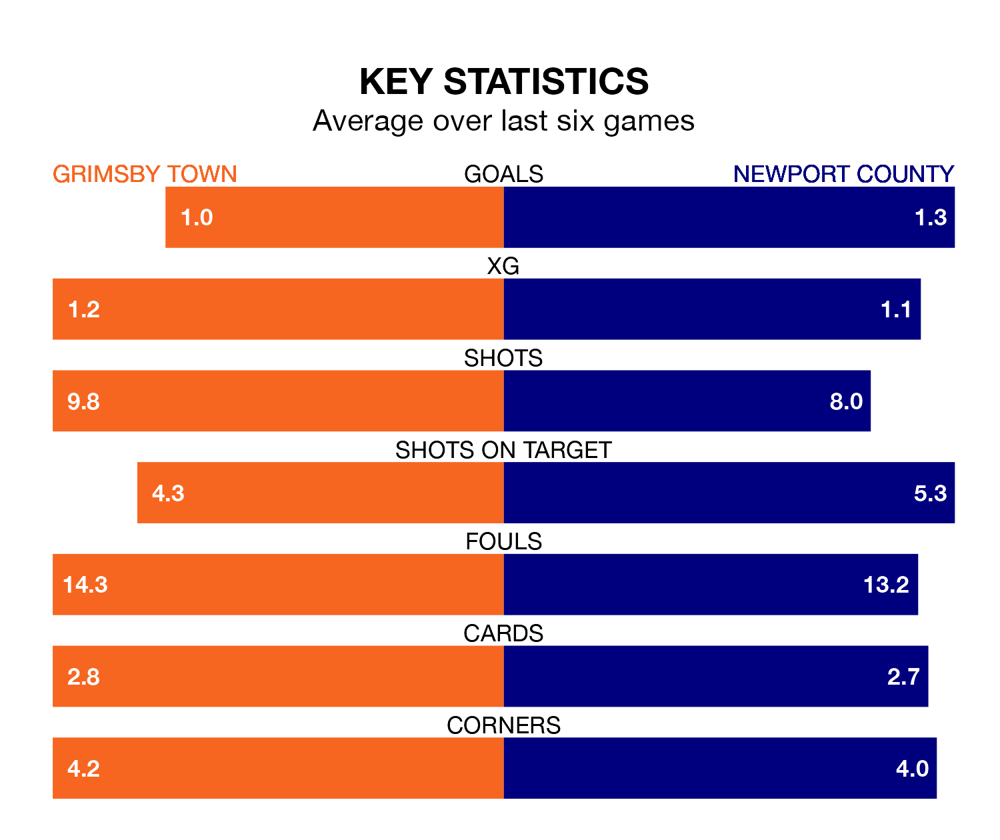

Newport County make the journey to Blundell Park to play Grimsby Town on Saturday looking to pick up points to end their three-game losing streak.
Newport's struggles have left them with six points from their last six EFL League Two matches, while their opponents have earned the same number from a possible 18.
In the last 10 years, Grimsby and Newport have played each other on 14 occasions. Grimsby won four of them, Newport six, and they drew four times.
On average, the Mariners scored 1.0 goal and the Exiles 1.0 in those matches.
Their last meeting was on December 16, when they played out a 1-1 draw.
Grimsby are 21st in the table after 40 games, of which they have won eight and drawn 16, earning 40 points.
Newport are eight places ahead of Town in 13th, with 16 wins and seven draws putting them on 55 points.
In Will Evans, County have one of the league's sharpest shooters so far this season. He has notched 20 goals in 41 appearances, to sit third in the scoring charts.
His goal rate of one every 171 minutes is quicker than that of Danny Rose, the Mariners' top scorer with a goal every 245 minutes, and a total of 12 goals in 34 games.
With 51 goals in 40 games so far this season, the hosts are scoring at below the league average rate with 1.3 goals per game. And they are conceding more than average, letting in 69 goals at a rate of 1.7 per game.
The Exiles are also below average scorers, with 1.4 goals per game, compared to a league average of 1.5. They have conceded 1.6 goals per game.
Grimsby's last match was on Monday, a 1-1 draw against Bradford City, with Curtis Thompson getting the goal for the Mariners.
Newport lost 4-0 against Crawley Town last time out, also on Monday.
Saturday's match will be refereed by Robert Madley, who has taken charge of one EFL League Two game so far this season, issuing no red cards and booking three players. He has awarded one penalty.
He is yet to oversee a match featuring either Grimsby or Newport this season.
Updated: 16:41 (UTC), 04/04/24